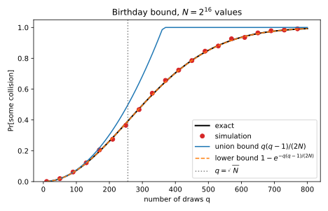

8 Cryptography basics
Some computations must hide something, such as a key, a message, or a value split among several holders. What does it mean that an observer with limited computing power learns nothing it was not supposed to learn? This chapter gives cryptography’s answer as mathematics, with toy constructions you can run.
One idea organizes the answer: security is a game. A challenger flips a fair coin to pick one of two worlds, runs a procedure in that world, and shows the result to an adversary, who guesses the world. An adversary that learns nothing is right half the time, and its advantage measures how much better it does. A scheme is secure when every efficient adversary’s advantage is tiny. Proofs walk from one world to the other through intermediate worlds called hybrids, each differing from the next in one detail, and add up the advantage gained at each step.
Two examples run through the chapter. The first is a coin with heads probability 0.51, to be told apart from a fair coin. One flip gives an advantage of at most 0.01, and 10,000 flips give 0.683, far below the 1 that adding 0.01 per flip, as the hybrid argument does, would suggest. The second is the 128-bit size of keys and cipher blocks used in practice. Testing \(10^{18}\) keys a second for a year finds a 128-bit key with probability \(9.3\times10^{-14}\), yet a cipher that encrypts 128-bit blocks loses its security guarantee after about \(2^{64}\) blocks. Table 8.1 lists the symbols, with \(Q\) and \(\nu\) for the number of queries an adversary makes and its advantage, which cryptography texts call \(q\) and \(\varepsilon\).
| Symbol | Meaning |
|---|---|
| \(\mathcal A\); \(\mathcal B\) | an adversary; one built from it by a reduction |
| \(\nu\); \(\lambda\) | an advantage; the security parameter |
| \(Q\) | the number of samples, queries or draws |
| \(P_0\), \(P_1\) | the two worlds a game compares |
| \(\xi\) | the coin’s extra heads probability, 0.01 |
| \(n\) | the bit length of messages and inputs |
| \(K\); \(m\); \(y\) | a random key; a message; a ciphertext |
| \(p\); \(h\) | a modulus, not a density; the number of share holders |
| \(d\), \(s\), \(e\) | the dimension, secret and error of learning with errors |
8.1 Distinguishers and advantage
Every definition in this chapter compares two worlds, so you first need a score for an observer who tries to tell them apart. This section defines that score and shows that it measures the same thing as winning a guessing game.
Definition 8.1 (Distinguisher and advantage) A distinguisher \(\mathcal A\) is any procedure, efficient or not, that receives one sample and outputs a bit. Its advantage in telling a distribution \(P_0\) from a distribution \(P_1\) is \[\mathrm{Adv}_{\mathcal A}(P_0, P_1) = \big|\Pr[\mathcal A(P_1) = 1] - \Pr[\mathcal A(P_0) = 1]\big|, \tag{8.1}\] where \(\Pr[\mathcal A(P_1) = 1]\) is the probability that \(\mathcal A\) outputs 1 on a sample from \(P_1\). In the distinguishing game, a challenger flips a fair bit \(b\) and gives \(\mathcal A\) a sample from \(P_b\), and \(\mathcal A\) wins if its guess \(b'\) equals \(b\).
The coin in the game is fair, so an adversary with nothing to go on wins half the time whatever it answers. The next lemma turns win rates into advantages and back.
Lemma 8.1 (Winning and advantage) For any distinguisher \(\mathcal A\) in the distinguishing game, \[\Pr[b' = b] = \frac12 + \frac12\big(\Pr[\mathcal A(P_1) = 1] - \Pr[\mathcal A(P_0) = 1]\big). \tag{8.2}\] So a distinguisher with advantage \(\nu\), flipped if needed as in step 3 below, yields one that wins with probability \(\frac12 + \frac\nu2\).
Proof.
- Split the win by world. Each world has probability \(\frac12\), and \(\mathcal A\) wins in world 1 by saying 1 and in world 0 by saying 0, so \[\Pr[b' = b] = \tfrac12\Pr[\mathcal A(P_1) = 1] + \tfrac12\Pr[\mathcal A(P_0) = 0]. \tag{8.3}\]
- Count only the outputs of 1. Saying 0 is the complement of saying 1, so replacing \(\Pr[\mathcal A(P_0) = 0]\) by \(1 - \Pr[\mathcal A(P_0) = 1]\) and collecting terms gives Equation 8.2.
- Flip a losing distinguisher. If the bracket is negative, the distinguisher that outputs the opposite bit negates the bracket, keeps the advantage, and wins with probability \(\frac12 + \frac\nu2\).
Write \(\mathrm{TV}(P_0, P_1)\) for the total variation (TV) distance, the sum, over the outcomes that \(P_1\) makes likelier than \(P_0\) does, of the extra probability \(P_1\) gives them. Divergences shows that the best distinguisher, which says 1 exactly on those outcomes, wins with probability \(\frac12 + \frac12\mathrm{TV}(P_0, P_1)\). Since an advantage \(\nu\) gives the win probability \(\frac12 + \frac\nu2\) by Lemma 8.1, no advantage exceeds the TV distance, however much time the distinguisher uses: \[\mathrm{Adv}_{\mathcal A}(P_0, P_1) \le \mathrm{TV}(P_0, P_1). \tag{8.4}\] Two worlds at TV distance 0 give perfect security, and at a small one statistical security. Cryptography’s main business is the third case, where the TV distance is large but no efficient distinguisher can exploit it.
Example 8.1 Let \(P_0\) be a fair coin and \(P_1\) a coin with heads probability 0.6. The distinguisher outputs 1 on heads. Each row of Table 8.2 is one outcome, with probability \(\frac12\) for the challenger’s bit times the probability of the coin’s outcome.
| \(b\) | Coin | Outcome | Probability | \(\mathcal A\) outputs | \(\mathcal A\) wins? |
|---|---|---|---|---|---|
| 0 | fair | tails | 0.25 | 0 | yes |
| 0 | fair | heads | 0.25 | 1 | no |
| 1 | biased | tails | 0.20 | 0 | no |
| 1 | biased | heads | 0.30 | 1 | yes |
The adversary wins with probability \(0.25 + 0.30 = 0.55\). Its advantage is \(0.6 - 0.5 = 0.1\), and indeed \(0.55 = \frac12 + \frac{0.1}2\). The excess of heads, 0.1, is also the TV distance, so no distinguisher does better from one flip, and for the running example’s coin the best is 0.01.
8.2 Negligible functions
A key of 40 bits can be found by trying every key, and a key of 256 bits cannot. So security says how fast the attacker’s success shrinks as a security parameter \(\lambda\), the key length in bits, grows. Calling a scheme secure first needs a notion of efficient attackers and of tiny success probabilities.
Definition 8.2 (Efficient adversaries and negligible functions) An adversary is probabilistic polynomial time (PPT) if it is a randomized algorithm whose running time is bounded by a polynomial in \(\lambda\). A function \(\mu\colon \mathbb N \to [0, 1]\) is negligible if, for every exponent \(c\), it eventually falls below \(\lambda^{-c}\) and stays there: \[\forall c > 0\ \ \exists \lambda_0\ \ \forall \lambda \ge \lambda_0:\quad \mu(\lambda) < \lambda^{-c}. \tag{8.5}\] A scheme is secure if every PPT adversary has negligible advantage in its security game.
An efficient adversary can repeat its attack polynomially many times, which by the union bound of Concentration inequalities multiplies its success by at most that polynomial. So “tiny” must stay tiny after multiplication by any polynomial, and the next proposition says that it does.
Proposition 8.1 (Negligible functions survive polynomial repetition) If \(\mu\) is negligible and \(\mathrm{poly}\) is a polynomial, then \(\mathrm{poly}(\lambda)\mu(\lambda)\) is negligible. The sum of two negligible functions is negligible.
Proof.
- Bound the polynomial by a power. A polynomial of degree \(c' - 1\) is eventually below \(\lambda^{c'}\), so \(\mathrm{poly}(\lambda) \le \lambda^{c'}\) for all \(\lambda \ge \lambda_1\).
- Ask \(\mu\) for a steeper decay. Fix any \(c > 0\). Applying Equation 8.5 with the exponent \(c + c'\) gives \(\mu(\lambda) < \lambda^{-(c+c')}\) for all \(\lambda \ge \lambda_2\).
- Multiply the two bounds. For \(\lambda \ge \max(\lambda_1, \lambda_2)\), \[\mathrm{poly}(\lambda)\mu(\lambda) < \lambda^{c'}\lambda^{-(c+c')} = \lambda^{-c}, \tag{8.6}\] and since \(c\) was arbitrary, the product is negligible.
- Handle a sum. With the exponent \(c + 1\), each of two negligible functions is eventually below \(\lambda^{-(c+1)}\), so their sum is below \(2\lambda^{-(c+1)}\), which is at most \(\lambda^{-c}\) once \(\lambda \ge 2\).
Brute force, trying \(t\) of the \(2^\lambda\) keys, succeeds with probability \(t/2^\lambda\), negligible for polynomial \(t\) but never zero. In logarithms, \(\mu\) is negligible when \(-\log_2\mu(\lambda)\) outgrows every multiple \(c\log_2\lambda\). So \(2^{-\lambda}\), \(\lambda^{-\log_2\lambda}\) and \(2^{-\sqrt\lambda}\) are negligible, but \(\lambda^{-10}\), with \(-\log_2\mu = 10\log_2\lambda\), is never below \(\lambda^{-11}\).
Example 8.2 At a fixed key length, “negligible” can mislead. Table 8.3 evaluates the four functions at \(\lambda = 128 = 2^7\).
| \(\mu(\lambda)\) | Negligible? | Value at \(\lambda = 128\) |
|---|---|---|
| \(2^{-\lambda}\) | yes | \(2^{-128} = 2.9\times10^{-39}\) |
| \(\lambda^{-\log_2\lambda}\) | yes | \(2^{-49} = 1.8\times10^{-15}\) |
| \(2^{-\sqrt\lambda}\) | yes | \(2^{-11.31} = 3.9\times10^{-4}\) |
| \(\lambda^{-10}\) | no | \(2^{-70} = 8.5\times10^{-22}\) |
The non-negligible \(\lambda^{-10}\) is smaller than two of the negligible functions, and \(2^{-\sqrt\lambda}\) drops below it for good only at \(\lambda = 20{,}520\). Figure 8.1 plots the bits of security \(-\log_2\mu(\lambda)\), the number of halvings from 1 down to \(\mu(\lambda)\).

8.3 Indistinguishability and the hybrid argument
Most security definitions say that two things look the same, such as a ciphertext and random bits. This section makes that precise and answers the first question every proof meets: if one sample cannot be told apart, can many?
Definition 8.3 (Computational indistinguishability) Two families of distributions \(P_0 = \{P_{0,\lambda}\}\) and \(P_1 = \{P_{1,\lambda}\}\), one distribution for each \(\lambda\), are computationally indistinguishable, written \(P_0 \approx_c P_1\), if every PPT distinguisher has negligible advantage \(\mathrm{Adv}_{\mathcal A}(P_{0,\lambda}, P_{1,\lambda})\). If their TV distance is negligible they are statistically indistinguishable, written \(\approx_s\), and if they are equal they are perfectly indistinguishable, written \(\equiv\).
By Equation 8.4, \(\equiv\) implies \(\approx_s\), which implies \(\approx_c\). A hybrid argument needs to know how advantages combine along a chain of worlds, and the next lemma says they add at most.
Lemma 8.2 (Advantages add along a chain) For any distributions \(H_0, H_1, \dots, H_Q\) and any distinguisher \(\mathcal A\), \[\mathrm{Adv}_{\mathcal A}(H_0, H_Q) \le \sum_{i=1}^Q \mathrm{Adv}_{\mathcal A}(H_{i-1}, H_i). \tag{8.7}\]
Proof.
- Telescope. In the sum over \(i\) of \(\Pr[\mathcal A(H_{i-1}) = 1] - \Pr[\mathcal A(H_i) = 1]\), each intermediate probability appears once with each sign, so the sum is \(\Pr[\mathcal A(H_0) = 1] - \Pr[\mathcal A(H_Q) = 1]\).
- Take absolute values. The absolute value of a sum is at most the sum of the absolute values.
The hybrid lemma walks from \(Q\) samples of \(P_0\) to \(Q\) samples of \(P_1\) by swapping one sample at a time. If the two ends are \(\nu\) apart, the \(Q\) steps share that \(\nu\), so a step is worth \(\nu/Q\) on average, and since a step changes one sample, it is a one-sample problem. Write \(P^{\otimes Q}\) for \(Q\) independent samples from \(P\).
Theorem 8.1 (The hybrid lemma) Let \(P_0 \approx_c P_1\) be families that an efficient algorithm can sample from, and let \(Q = Q(\lambda)\) be a polynomial. Then \(P_0^{\otimes Q} \approx_c P_1^{\otimes Q}\). Quantitatively, a distinguisher with advantage \(\nu\) on \(Q\) samples yields a distinguisher with advantage \(\nu/Q\) on one sample, with about the same running time.
Proof. The proof builds a one-sample distinguisher that lands at a random link of a chain of hybrids, computes its advantage by telescoping, and concludes by contradiction.
- Define the hybrids. Let \(H_i\) be \(Q\) independent entries, the first \(i\) from \(P_1\) and the rest from \(P_0\), so \(H_0 = P_0^{\otimes Q}\) and \(H_Q = P_1^{\otimes Q}\).
- Build a one-sample distinguisher. On input \(w\), let \(\mathcal B\) pick a position \(i\) uniformly from \(\{1, \dots, Q\}\), draw the other entries itself as in \(H_i\), which needs efficient sampling, put \(w\) in position \(i\), and run \(\mathcal A\). The tuple is distributed as \(H_{i-1}\) if \(w\) comes from \(P_0\), and as \(H_i\) if it comes from \(P_1\).
- Average over the position. Each \(i\) has probability \(\frac1Q\), so \[\Pr[\mathcal B(P_0) = 1] - \Pr[\mathcal B(P_1) = 1] = \frac1Q\sum_{i=1}^Q\big(\Pr[\mathcal A(H_{i-1}) = 1] - \Pr[\mathcal A(H_i) = 1]\big). \tag{8.8}\]
- Telescope. As in the proof of Lemma 8.2, the sum equals \(\Pr[\mathcal A(H_0) = 1] - \Pr[\mathcal A(H_Q) = 1]\), so \(\mathcal B\) has advantage \(\nu/Q\).
- Conclude by contradiction. If \(\nu\) were not negligible, there would be a \(c\) with \(\nu(\lambda) \ge \lambda^{-c}\) for infinitely many \(\lambda\). With \(Q(\lambda) \le \lambda^{c'}\), the efficient \(\mathcal B\) would then have advantage at least \(\lambda^{-(c+c')}\) for those \(\lambda\), which contradicts \(P_0 \approx_c P_1\).
Example 8.3 Let \(P_0\) be a fair coin and \(P_1\) the running example’s coin, with heads probability \(\frac12 + \xi\). One flip gives an advantage of at most \(\xi\), so the hybrid lemma, turned around, allows at most \(Q\xi\) from \(Q\) flips. The factor \(Q\) is pessimistic, because the best attacker pools its flips into one count of heads. Table 8.4 and Figure 8.2 compare that bound with the exact best advantage and with majority vote, which outputs 1 when more than half the flips are heads.
| Flips \(Q\) | Majority vote (simulation) | Best possible (TV) | Hybrid bound \(\min(1, Q\xi)\) |
|---|---|---|---|
| 1 | 0.008 | 0.010 | 0.010 |
| 100 | 0.082 | 0.080 | 1.000 |
| 10,000 | 0.481 | 0.683 | 1.000 |
Majority vote’s 0.082, above the best possible 0.080, is simulation noise. Both counts of heads have a standard deviation of about \(\sqrt Q/2\), and their means differ by \(Q\xi\), so they are close to bell curves whose centres are \(2\xi\sqrt Q\) standard deviations apart. Two normal curves whose centres are \(\delta\) standard deviations apart have TV distance \(2\Phi(\delta/2) - 1\), with \(\Phi\) the standard normal distribution function, so the best advantage is about \[2\Phi(\xi\sqrt Q) - 1, \tag{8.9}\] which grows like \(\xi\sqrt Q\) rather than \(\xi Q\). Majority vote stalls near \(\frac12\), because its threshold sits at the centre of the fair count’s curve, so on fair flips it still says 1 about half the time.

8.4 Concrete security
Real systems fix \(\lambda\), and a statement for all large enough \(\lambda\) does not say whether 128 is large enough. Concrete security replaces “efficient” and “negligible” by explicit numbers, so that a proof says how much a key can withstand.
Definition 8.4 (Concrete security and reductions) A primitive is \((t, Q, \nu)\)-secure if every adversary that runs in time at most \(t\) and makes at most \(Q\) queries to its oracles, the procedures the game lets it call, has advantage at most \(\nu\). It has \(\kappa\)-bit security if, roughly, every adversary with time \(t\) has advantage at most \(t/2^\kappa\), as for brute force over \(\kappa\)-bit keys. A reduction turns an adversary that breaks a scheme with \((t, Q, \nu)\) into one that breaks a primitive the scheme is built from with \((t', Q', \nu')\), and it is tight when \(\nu' \approx \nu\).
So a reduction says that a hard primitive makes a hard scheme, and a loose one costs bits. If an attack of advantage \(\nu\) on the scheme gives only \(\nu/2^{20}\) on a 128-bit primitive, the scheme keeps only \(128 - 20 = 108\) bits.
Example 8.4 An exascale machine that tests \(10^{18}\) keys per second for a year of about \(3.16\times10^7\) seconds tries \(2^{84.7}\) keys. Against a 128-bit key it succeeds with probability \(2^{84.7 - 128} = 9.3\times10^{-14}\), and trying all \(2^{128}\) keys would take \(1.08\times10^{13}\) years.
8.5 Pseudorandom generators and functions
The schemes later in this chapter need many random-looking values from one short random key, because truly random bits are expensive to share. This section defines the two objects that supply them, generators and functions, and builds the second from the first.
Definition 8.5 (Pseudorandom generator) Write \(U_\ell\) for the uniform distribution on \(\ell\)-bit strings. An efficient deterministic map \(G\) from \(\lambda\)-bit strings to \(\ell(\lambda)\)-bit strings, with \(\ell(\lambda) > \lambda\), is a pseudorandom generator (PRG) if \[G(U_\lambda) \approx_c U_{\ell(\lambda)}. \tag{8.10}\]
Pseudorandomness is a statement about efficient distinguishers only, because the outputs of \(G\) form a tiny subset of all strings.
Proposition 8.2 (A pseudorandom generator is never statistically secure) For every \(G\) as in Definition 8.5, \(\mathrm{TV}(G(U_\lambda), U_\ell) \ge \frac12\).
Proof.
- An exhaustive distinguisher. Let \(\mathcal A\) output 1 exactly when its input equals \(G(u)\) for some seed \(u\). On \(G(U_\lambda)\) it always outputs 1.
- Few strings are outputs. At most \(2^\lambda\) of the \(2^\ell\) strings are outputs, so on \(U_\ell\), \(\mathcal A\) outputs 1 with probability at most \(2^{\lambda - \ell} \le \frac12\).
- Bound the distance. So \(\mathcal A\) has advantage at least \(\frac12\), and Equation 8.4 gives the bound.
This distinguisher loops over \(2^\lambda\) seeds, so it is not efficient,. A random function from a set \(\mathcal X\) to a set \(\mathcal Y\) gives each input its own independent, uniform output. A pseudorandom function must look like one even to an adversary who chooses its questions.
Definition 8.6 (Pseudorandom function) A keyed function \(F_K\colon \mathcal X \to \mathcal Y\), with a \(\lambda\)-bit key \(K\), is a pseudorandom function (PRF) if every PPT adversary has negligible advantage in this game. The challenger flips \(b\), and its oracle is \(F_K\) for a uniform key \(K\) if \(b = 0\) and a random function if \(b = 1\). The adversary sends \(Q\) queries, each of which may depend on earlier answers, and guesses \(b\).
A random function on 128-bit inputs is a table of \(2^{128}\) entries, which nobody can store, and a PRF gives the same appearance from a 128-bit key. The toy code uses the hash-based message authentication code (HMAC), a keyed hash that practice treats as a PRF.
8.5.1 The GGM tree
A PRF can be built from any PRG that doubles its input’s length. The construction of Goldreich, Goldwasser & Micali (1986), the GGM tree, uses the generator to grow a binary tree of keys, picking the left or right half of the output by the next bit of the input.
Theorem 8.2 (The GGM tree is a pseudorandom function) Let \(G\) map \(\lambda\) bits to \(2\lambda\) bits, with output halves \(G_0(u)\) and \(G_1(u)\). For an input \(x = x_1\cdots x_n\), start at the root \(K\), replace the current node \(v\) by \(G_{x_i}(v)\) for \(i = 1, \dots, n\), and let \(F_K(x)\) be the leaf reached. With advantages in the games of Definition 8.6 and Definition 8.5 written \(\mathrm{Adv}_{\mathrm{PRF}}\) and \(\mathrm{Adv}_{\mathrm{PRG}}\), for every adversary \(\mathcal A\) making \(Q\) queries there is a PRG adversary \(\mathcal B\) with about the same running time such that \[\mathrm{Adv}_{\mathrm{PRF}}(\mathcal A) \le nQ\cdot\mathrm{Adv}_{\mathrm{PRG}}(\mathcal B). \tag{8.11}\]
Goldreich (2001, §3.6) proves it, and Appendix Section I.1 derives it step by step. It makes the tree random one level at a time, and each of the \(n\) levels costs at most \(Q\) times the PRG advantage, because the queries reach at most \(Q\) nodes per level, which Theorem 8.1 swaps one at a time.
Example 8.5 On the 2-bit input \(10\), the tree computes \(G_1(K)\) and then outputs the left half of \(G\) applied to that node, \(G_0(G_1(K))\). For 128-bit inputs, one evaluation walks 128 levels and costs 128 generator calls.
8.6 The birthday bound
The proofs of the next two sections fail only if two random values coincide, such as a repeated nonce, a random value meant to be used once, so you need the probability of a coincidence. Among \(Q\) values there are about \(Q^2/2\) pairs, and each coincides with probability \(1/N\), so collisions become likely after about \(\sqrt N\) draws rather than \(N\).
Theorem 8.3 (The birthday bound) Draw \(Q\) values independently and uniformly from a set of size \(N\). Then \[1 - e^{-Q(Q-1)/(2N)} \;\le\; \Pr[\text{collision}] \;\le\; \frac{Q(Q-1)}{2N} \le \frac{Q^2}{2N}, \tag{8.12}\] and the collision probability reaches \(\frac12\) after about \(1.18\sqrt N\) draws.
Proof. The upper bound counts pairs. The lower bound bounds the exact probability of no collision by an exponential.
- Upper bound. Each of the \(Q(Q-1)/2\) pairs coincides with probability \(1/N\), so the union bound gives the upper bound.
- Exact value. Draw the values one at a time. If the first \(i\) are distinct, the next avoids them with probability \(1 - i/N\), so \[\Pr[\text{no collision}] = \prod_{i=0}^{Q-1}\Big(1 - \frac iN\Big). \tag{8.13}\]
- Lower bound. The inequality \(1 - x \le e^{-x}\) of Concentration inequalities bounds each factor, and the exponents add to \(Q(Q-1)/(2N)\). Subtracting from 1 gives the lower bound.
- The 50% point. Setting the lower bound to \(\frac12\), with \(Q(Q-1) \approx Q^2\), gives \(Q^2/(2N) = \ln 2\), so \(Q \approx \sqrt{2N\ln 2} \approx 1.18\sqrt N\).
The two bounds are close, because \(1 - e^{-x}\) bends downwards and so lies above its chord \((1 - 1/e)x\) on \([0, 1]\), which makes the lower bound at least \(1 - 1/e\) times the upper one. With \(N = 2^{128}\), random 128-bit values start to collide after about \(2^{64}\) draws.
Example 8.6 Table 8.5 gives the exact probability and both bounds for three cases. For the class of 23, the union bound is \(23 \times 22/730 = 0.693\).
| Case | \(Q\) | \(N\) | Exact | Union bound | \(1 - e^{-Q(Q-1)/(2N)}\) |
|---|---|---|---|---|---|
| Shared birthday in a class | 23 | 365 | 0.507 | 0.693 | 0.500 |
| Hashing trick: 1,000 features into \(2^{20}\) buckets | 1,000 | \(2^{20}\) | 0.379 | 0.476 | 0.379 |
| Random 32-bit identifiers for 100,000 records | 100,000 | \(2^{32}\) | 0.688 | 1.164 | 0.688 |
Figure 8.3 checks Equation 8.12 for \(N = 2^{16}\). At \(Q = 256\) the exact probability is 0.3927, a simulation of 100,000 trials gives 0.3920, and the union bound gives 0.4980. The 50% point is \(Q = 301\), against \(1.18 \times 256 \approx 302\).

8.7 Block ciphers and the switching lemma
A block cipher such as the Advanced Encryption Standard (AES) is a keyed permutation, which never gives two inputs the same output, while most proofs assume a PRF. This section bridges the gap and turns the birthday bound into a limit on how much data one key may encrypt. A random function sometimes repeats an output and a random permutation never does, so an adversary can tell them apart only about as often as \(Q\) random values collide.
Definition 8.7 (Pseudorandom permutation) A keyed permutation of \(\mathcal X\) is a pseudorandom permutation (PRP) if it satisfies Definition 8.6 with the random function replaced by a uniformly random permutation of \(\mathcal X\).
Theorem 8.4 (The switching lemma) Let \(\mathcal A\) make \(Q\) queries, and write \(\mathcal A^{\mathrm{RF}}\) and \(\mathcal A^{\mathrm{RP}}\) for \(\mathcal A\) run with a random function and with a random permutation of \(\mathcal X\) as its oracle. Then \[\big|\Pr[\mathcal A^{\mathrm{RF}} = 1] - \Pr[\mathcal A^{\mathrm{RP}} = 1]\big| \le \frac{Q(Q-1)}{2|\mathcal X|} \le \frac{Q^2}{2|\mathcal X|}. \tag{8.14}\]
Proof. The plan is to run both oracles from one pre-drawn list of answers and show that they behave identically unless the list has a repeat.
- Simplify the adversary. Assume the \(Q\) queries are distinct, since both oracles answer a repeated query the same way.
- Pre-sample the function’s answers. Draw \(Y_1, \dots, Y_Q\) independently and uniformly from \(\mathcal X\) and answer the \(i\)-th query with \(Y_i\). On distinct queries this is exactly a random function.
- Do the same for the permutation. A random permutation answers each new query with a value uniform over those not yet used, so it can be run from a uniform list of \(Q\) distinct values.
- Compare the two. Let \(\mathrm{Col}\) be the event that the list of step 2 has a repeat. Every list is equally likely, so conditioning on no repeat gives a uniform list of distinct values, exactly the permutation’s. Hence \(\Pr[\mathcal A^{\mathrm{RF}} = 1 \mid \text{no } \mathrm{Col}] = \Pr[\mathcal A^{\mathrm{RP}} = 1]\), which we call \(\rho\).
- Bound the difference. Splitting on \(\mathrm{Col}\), and using step 4 for the case without a repeat, \[\Pr[\mathcal A^{\mathrm{RF}} = 1] = \Pr[\mathrm{Col}]\Pr[\mathcal A^{\mathrm{RF}} = 1 \mid \mathrm{Col}] + (1 - \Pr[\mathrm{Col}])\rho. \tag{8.15}\] Subtracting \(\rho\) from both sides gives \[\Pr[\mathcal A^{\mathrm{RF}} = 1] - \rho = \Pr[\mathrm{Col}]\big(\Pr[\mathcal A^{\mathrm{RF}} = 1 \mid \mathrm{Col}] - \rho\big), \tag{8.16}\] and the bracket is a difference of probabilities, so the whole is at most \(\Pr[\mathrm{Col}]\) in absolute value.
- Count the repeats. Equation 8.12 with \(N = |\mathcal X|\) bounds \(\Pr[\mathrm{Col}]\).
Since \(\mathrm{Col}\) depends only on the pre-drawn list, step 4 holds even when each query depends on earlier answers (Bellare & Rogaway 2006). The bound is tight, because the adversary that outputs 1 when two answers collide does so with probability \(\Pr[\mathrm{Col}]\) against a function and never against a permutation.
Corollary 8.1 (A pseudorandom permutation is a pseudorandom function) A PRP with advantage at most \(\nu\) against \(Q\)-query adversaries is a PRF with advantage at most \(\nu + Q^2/(2|\mathcal X|)\).
Proof. Go from \(F_K\) to a random permutation, at cost at most \(\nu\) by assumption, and then to a random function, at cost at most \(Q^2/(2|\mathcal X|)\) by Theorem 8.4. By Lemma 8.2 the total is at most the sum.
Example 8.7 For a cipher on 128-bit blocks, the extra term \(Q^2/(2|\mathcal X|)\) of Corollary 8.1 after \(Q = 2^k\) blocks is \(Q^2/2^{129} = 2^{2k - 129}\). After \(2^{32}\) blocks of 16 bytes, which is 64 GiB, it is at most \(2^{-65}\), and after \(2^{48}\) blocks, about 4 PiB, at most \(2^{-33}\). At \(2^{64}\) blocks it reaches \(\frac12\), so keys must be changed long before.
8.8 Perfect secrecy and the one-time pad
Encryption should hide the message. The strongest possible answer is a ciphertext that tells even an unbounded adversary nothing, and Shannon (1949) showed what it costs: a key as long as the data.
Definition 8.8 (Perfect secrecy) An encryption scheme turns a message \(m\) into a ciphertext \(\mathrm{Enc}_K(m)\) under a random key \(K\), and back. It has perfect secrecy if, for all messages \(m, m'\) and ciphertexts \(y\), \[\Pr[\mathrm{Enc}_K(m) = y] = \Pr[\mathrm{Enc}_K(m') = y]. \tag{8.17}\]
Equivalently, by Bayes’ rule, seeing the ciphertext does not change the probability of any message, for any prior on messages that is independent of the key. The proof for the one-time pad rests on one counting fact, which secret sharing and learning with errors use again.
Lemma 8.3 (A bijection maps uniform to uniform) If \(U\) is uniform on a finite set \(S\) and \(f\colon S \to S\) is a bijection, then \(f(U)\) is uniform on \(S\).
Proof. Each \(t \in S\) comes from exactly one element, \(f^{-1}(t)\), so \(\Pr[f(U) = t] = \Pr[U = f^{-1}(t)] = 1/|S|\).
Theorem 8.5 (The one-time pad has perfect secrecy) For \(n\)-bit messages, let \(K\) be uniform on \(n\)-bit strings and \(\mathrm{Enc}_K(m) = m \oplus K\), where \(\oplus\) is bitwise exclusive or (XOR). Then every ciphertext has probability \(2^{-n}\) for every message, so the scheme has perfect secrecy.
Proof.
- The pad is a bijection. For fixed \(m\), the map \(k \mapsto m \oplus k\) is its own inverse, since \(m \oplus m = 0\).
- Apply the lemma. By Lemma 8.3, \(m \oplus K\) is uniform whatever \(m\) is.
No scheme can do better on key length, so a 128-bit message needs a fresh 128-bit key.
Proposition 8.3 (Perfect secrecy needs as many keys as messages) If a scheme with key set \(\mathcal K\) and message set \(\mathcal M\) has perfect secrecy and correct decryption, then \(|\mathcal K| \ge |\mathcal M|\).
Proof.
- Few messages reach one ciphertext. Fix a ciphertext \(y\) that occurs. Each key decrypts \(y\) to one message, so at most \(|\mathcal K|\) messages can produce \(y\).
- Fewer keys break secrecy. If \(|\mathcal K| < |\mathcal M|\), some message never produces \(y\) while another does, so their ciphertext distributions differ.
The pad must also never be reused, because XOR-ing two ciphertexts under one pad cancels it and reveals \(m_1 \oplus m_2\). English text is so redundant that both messages can be pulled apart from \(m_1 \oplus m_2\).
Example 8.8 Table 8.6 shows the pad on 2-bit messages. Each message reaches every ciphertext under exactly one key.
| Key \(K\) | 00 | 01 | 10 | 11 |
|---|---|---|---|---|
| Ciphertext for \(m = 01\) | 01 | 00 | 11 | 10 |
| Ciphertext for \(m = 10\) | 10 | 11 | 00 | 01 |
8.9 Chosen-plaintext security
Practical encryption accepts a negligible advantage in exchange for a short key. This section gives the definition used in practice, shows that it forces encryption to be randomized, and proves a randomized scheme secure. In the game, the adversary picks two messages and must say which one a ciphertext encrypts, which Goldwasser & Micali (1984) showed is equivalent to their semantic security, under which a ciphertext helps compute nothing about the message.
Definition 8.9 (Indistinguishability under chosen-plaintext attack) A scheme is indistinguishable under chosen-plaintext attack (CPA), or IND-CPA secure, if every PPT adversary has negligible advantage in this game. The challenger draws a key \(K\) and a fair bit \(b\). The adversary may ask for encryptions of messages of its choice at any time. It submits two messages \(m_0\) and \(m_1\) of equal length, receives the challenge \(y^* = \mathrm{Enc}_K(m_b)\), and outputs a guess \(b'\).
Taking \(b = 0\) and \(b = 1\) as the two worlds, Lemma 8.1 makes this advantage \(2|\Pr[b' = b] - \frac12|\). The messages have equal length because ciphertexts usually reveal lengths. If encryption always maps a message to the same ciphertext, the adversary can encrypt \(m_0\) itself and compare.
Proposition 8.4 (Deterministic encryption is never IND-CPA secure) If \(\mathrm{Enc}_K\) is a deterministic function of the message and decryption is correct, some adversary that makes one encryption query has advantage 1.
Proof.
- The attack. Ask for \(y_0 = \mathrm{Enc}_K(m_0)\), submit \(m_0\) and \(m_1\), and output 0 if \(y^* = y_0\) and 1 otherwise.
- World 0. If \(b = 0\), determinism gives \(y^* = y_0\), so the guess is 0.
- World 1. If \(b = 1\), correct decryption of the distinct messages forces \(\mathrm{Enc}_K(m_1) \ne \mathrm{Enc}_K(m_0)\), so the guess is 1.
The fix is a fresh pad for every encryption. Draw a uniform \(r\) from a set \(\mathcal R\), use \(F_K(r)\) as a one-time pad, and send \(r\) along. The scheme fails only if the PRF is distinguishable from random or the challenge reuses a seen \(r\), and the bound adds the two.
Theorem 8.6 (A randomized scheme from a PRF) Let \(\mathrm{Enc}_K(m) = (r,\ m \oplus F_K(r))\) with \(r\) uniform on \(\mathcal R\). For every adversary \(\mathcal A\) making \(Q\) encryption queries there is a PRF adversary \(\mathcal B\) with about the same running time such that \[\Pr[\mathcal A \text{ wins}] \le \frac12 + \mathrm{Adv}_{\mathrm{PRF}}(\mathcal B) + \frac{Q}{2|\mathcal R|}. \tag{8.18}\]
Proof. The proof replaces the PRF by a random function at the cost of the PRF advantage, and then shows that the challenge is a one-time pad unless one bad event happens.
- Two hybrids. Hybrid 0 is the real game, and hybrid 1 replaces \(F_K\) by a random function \(f\).
- The step costs the PRF advantage. \(\mathcal B\) runs the game for \(\mathcal A\) with its own oracle in place of \(F_K\) and outputs 1 when \(\mathcal A\) wins. With oracle \(F_K\) it simulates hybrid 0, and with \(f\) hybrid 1, so the win probabilities differ by at most \(\mathrm{Adv}_{\mathrm{PRF}}(\mathcal B)\).
- The bad event. Let \(E\) be the event that the challenge’s \(r^*\) equals one of the \(Q\) values \(r_i\) that the encryption oracle drew. Each equals it with probability \(1/|\mathcal R|\), so the union bound gives \(\Pr[E] \le Q/|\mathcal R|\).
- Without it, a one-time pad. Then \(f(r^*)\) is uniform and independent of everything else \(\mathcal A\) sees, so by Lemma 8.3 the challenge is uniform whatever \(b\) is, and \(\mathcal A\) wins with probability \(\frac12\).
- Combine. Bounding the win probability by 1 when \(E\) happens, \[\Pr[\text{win in hybrid 1}] \le \tfrac12\Pr[\text{not } E] + \Pr[E] = \tfrac12 + \tfrac12\Pr[E] \le \tfrac12 + \frac{Q}{2|\mathcal R|}, \tag{8.19}\] and adding the loss of step 2 gives the bound.
By Lemma 8.1, in advantage units the bound is \(2\,\mathrm{Adv}_{\mathrm{PRF}} + Q/|\mathcal R|\), and the term \(Q/|\mathcal R|\) is real, not an artefact of the proof.
Example 8.9 Against the deterministic scheme \(m \oplus F_K(0)\), the attack of Proposition 8.4 has measured advantage 1.000 over 20,000 games for each \(b\). Against the randomized scheme with 8-bit nonces, \(|\mathcal R| = 256\), the adversary asks for \(Q = 16\) encryptions of \(m_0\), and XOR-ing each reply with \(m_0\) reveals its pad \(F_K(r_i)\). If \(r^*\) matches one of those nonces \(r_i\), it reads the challenge and outputs the true \(b\), and otherwise it outputs 1. So it errs only when \(b = 0\) and there is no match, and its advantage is \(1 - (1 - \Pr[E]) = \Pr[E]\). Since \(r^*\) misses each nonce with probability \(255/256\), \[\Pr[E] = 1 - (255/256)^{16} = 0.0607. \tag{8.20}\] The simulation measures 0.0605, and the bound \(Q/|\mathcal R|\) is 0.0625. With 128-bit nonces the same attack has advantage below \(16/2^{128} = 2^{-124}\).
8.10 The simulation paradigm
Encryption hides everything, but many procedures must reveal something, such as a participant’s own share of a secret, and nothing else. The simulation paradigm defines “nothing else” indirectly: whatever the participant sees, it could have produced by itself from what it is allowed to know (Lindell 2017).
Definition 8.10 (Revealing nothing beyond a leakage) A randomized procedure run on the inputs \(x\) of all participants gives one participant a view \(\mathrm{View}(x)\), everything it sees during the run. The participant is allowed to learn a function \(L(x)\), its leakage. The procedure reveals nothing beyond \(L\) if an efficient simulator \(S\) given only \(L(x)\) reproduces the view’s distribution: \[S(L(x)) \equiv \mathrm{View}(x) \quad\text{for every input } x. \tag{8.21}\] Replacing \(\equiv\) by \(\approx_s\) or \(\approx_c\) gives statistical or computational security.
The definition captures “nothing else” because anything computed from the view has the same distribution when computed from the simulator’s output, which uses \(L(x)\) alone. The simplest procedure it covers splits a number into random pieces that add up to it, in \(\mathbb Z_p\), the integers \(\{0, \dots, p - 1\}\) with arithmetic mod \(p\).
Definition 8.11 (Additive secret sharing) To share a secret \(x \in \mathbb Z_p\) among \(h\) holders, draw the shares \(z_1, \dots, z_{h-1}\) independently and uniformly from \(\mathbb Z_p\), and set \[z_h = x - (z_1 + \dots + z_{h-1}) \bmod p. \tag{8.22}\]
Any \(h - 1\) shares should look uniform whatever the secret is, because the missing share is what ties them to \(x\).
Theorem 8.7 (Any h − 1 shares reveal nothing) For every secret \(x\) and every coalition of \(h - 1\) holders, the coalition’s shares are independent and uniform on \(\mathbb Z_p^{h-1}\). So a simulator that outputs \(h - 1\) uniform elements of \(\mathbb Z_p\), with no leakage, satisfies Equation 8.21 with \(\equiv\).
Proof.
- The randomness is uniform. Each of the \(p^{h-1}\) tuples \((z_1, \dots, z_{h-1})\) has probability \(p^{-(h-1)}\).
- The coalition’s shares determine the randomness. Fix \(x\) and a coalition that misses holder \(j\). If \(j = h\), the coalition holds \(z_1, \dots, z_{h-1}\) themselves. If \(j < h\), it holds \(z_h\) and every other \(z_i\), and the definition of \(z_h\) gives back \(z_j = x - z_h - \sum_{i \ne j, h} z_i\).
- So the map is a bijection. The map from the randomness to the coalition’s shares can be undone, so by Lemma 8.3 every tuple of shares has probability \(p^{-(h-1)}\) for every \(x\).

8.11 Learning with errors
Every primitive so far is defined by what it hides rather than by how. Learning with errors (LWE), introduced by Regev (2005), is a specific hard problem with no known efficient attack even by a quantum computer, and encryption built on it lets you add ciphertexts. It is linear algebra with noise.
Definition 8.12 (Learning with errors) Fix a dimension \(d\), a modulus \(p\) and an error distribution \(\chi\) on small integers. Draw a secret \(s\) uniformly from \(\mathbb Z_p^d\). An LWE sample is a uniform \(a \in \mathbb Z_p^d\) together with the inner product \(\langle a, s\rangle\) plus an error \(e\) drawn from \(\chi\): \[\big(a,\ \langle a, s\rangle + e \bmod p\big). \tag{8.23}\] Search LWE asks for \(s\) from many samples. Decision LWE asks whether given pairs are LWE samples or uniform pairs.
Solving search solves decision, since you can check whether the residuals \(b - \langle a, s\rangle\) of a candidate \(s\) are small. Regev shows the converse for a prime \(p\) polynomial in \(d\), and Appendix Section I.2 derives it step by step. For suitably wide errors drawn from a normal distribution rounded to integers, Regev (2009) proves LWE as hard as the hardest instances of well-studied geometric problems on lattices, regular grids of points in \(\mathbb R^d\). These results are cited, not proved here, and they do not cover the uniform errors used in the toy scheme below.
Example 8.11 Without noise, LWE is a linear system that Gaussian elimination solves. Take \(d = 2\), \(p = 7\), \(s = (3, 5)\), \(a_1 = (1, 2)\) and \(a_2 = (3, 1)\), so the right-hand sides are \(13 \equiv 6\) and \(14 \equiv 0\). The second equation gives \(s_2 = -3s_1 \equiv 4s_1\), and the first then gives \(s_1 + 8s_1 = 9s_1 \equiv 2s_1 = 6\), so \(s_1 = 3\) and \(s_2 = 12 \equiv 5\). With the error \((1, 0)\) both right-hand sides are 0, and the same steps give \((0, 0)\), completely wrong, because elimination multiplies the error by the inverse matrix, which mod 7 sends \((1, 0)\) to \((4, 2)\), and \((3, 5) + (4, 2) \equiv (0, 0)\). At \(d = 16\) and \(p = 4096\) with 32 samples, the script’s elimination recovers all 16 coordinates of \(s\) without noise, and 0 with errors in \(\{-1, 0, 1\}\).
8.12 Regev encryption and its noise budget
The hardness of LWE becomes encryption once a message bit hides in a sample. Picture \(\mathbb Z_p\) as a clock, and move the sample’s second component halfway round if the bit is 1. Whoever knows \(s\) subtracts \(\langle a, s\rangle\) and sees whether the rest is near 0 or near halfway. This section proves the scheme correct and secure, and asks how many ciphertexts can be added.
Definition 8.13 (Regev’s bit encryption) Take \(p\) even and a key \(s \in \mathbb Z_p^d\). To encrypt a bit \(m\), draw a fresh uniform \(a\) and an error \(e\) from \(\chi\), and output \[\mathrm{Enc}_s(m) = \big(a,\ w = \langle a, s\rangle + e + m\cdot\tfrac p2 \bmod p\big). \tag{8.24}\] To decrypt, compute \(v = w - \langle a, s\rangle \bmod p\) and output 1 if \(p/4 < v < 3p/4\).
Proposition 8.5 (Correctness) Decryption returns \(m\) whenever \(|e| < p/4\).
Proof.
- Remove the inner product. By the definition of \(w\), \(v = e + m\frac p2 \bmod p\).
- A 0 stays near 0. If \(m = 0\), then \(v \equiv e\) lies in \([0, p/4)\) or, for negative \(e\), in \((3p/4, p)\), and the output is 0.
- A 1 stays near halfway. If \(m = 1\), then \(v = e + p/2\) lies in \((p/4, 3p/4)\), and the output is 1.
Without \(s\), an LWE sample looks uniform, so the bit is added to something that looks uniform, as in a one-time pad.
Proposition 8.6 (Security under decision LWE) If an IND-CPA adversary \(\mathcal A\) against Regev’s scheme has advantage \(\nu\), there is a decision-LWE distinguisher \(\mathcal B\) with about the same running time and advantage \(\nu/2\).
Proof.
- The distinguisher. \(\mathcal B\) runs the IND-CPA game for \(\mathcal A\), builds each ciphertext from one of its given pairs by adding \(m\cdot\frac p2\) to the second component, and outputs 1 when \(\mathcal A\) wins.
- On LWE samples. The ciphertexts are real, so by Lemma 8.1 \(\mathcal B\) outputs 1 with probability \(\frac12 + \frac\nu2\).
- On uniform pairs. Adding a fixed value is a bijection of \(\mathbb Z_p\), so by Lemma 8.3 each second component is uniform whatever \(m\) is, and \(\mathcal A\) wins with probability \(\frac12\). The difference is \(\frac\nu2\).
A ciphertext is linear in \(a\), the error and the encoded bit, so adding ciphertexts adds all three, and two half-turns make a full turn.
Proposition 8.7 (Adding ciphertexts) The componentwise sum of encryptions of \(m_1, \dots, m_k\) under one key is an encryption of \(m_1 \oplus \dots \oplus m_k\) with error \(e_1 + \dots + e_k\). If every \(|e_i| \le B\), it decrypts correctly whenever \[k < \frac{p}{4B}. \tag{8.25}\]
Proof.
- Linearity. By linearity of the inner product, \[\sum_i w_i - \Big\langle\sum_i a_i, s\Big\rangle = \sum_i e_i + \Big(\sum_i m_i\Big)\frac p2 \bmod p. \tag{8.26}\]
- Only the parity survives. Because \(p\) is even, \(2\cdot\frac p2 \equiv 0\), so only \(m_1 \oplus \dots \oplus m_k\) remains in the last term.
- Bound the error. By the triangle inequality the summed error is at most \(kB\) in absolute value, and by Proposition 8.5 \(kB < p/4\) suffices.
Equation 8.25 assumes that every error is as large as possible, with the same sign. Independent errors with mean zero mostly cancel, so \(k\) errors of standard deviation \(\sigma\) sum to a standard deviation of \(\sigma\sqrt k\). For \(\chi\) uniform on the \(2B + 1\) integers \(\{-B, \dots, B\}\) the variance is \(((2B+1)^2 - 1)/12 = B(B+1)/3\). By the central limit theorem, with \(Z\) a standard normal variable and the reduction mod \(p\) taken into \((-p/2, p/2]\), \[\Pr[\text{failure after } k \text{ additions}] \approx \Pr\Big[\big|Z\sqrt{kB(B+1)/3} \bmod p\big| > p/4\Big]. \tag{8.27}\]
Example 8.12 Take \(d = 3\), \(p = 4096\) and \(s = (5, 1000, 3000)\). Encrypting \(m = 1\) with \(a_1 = (17, 2, 1)\) and \(e_1 = -7\) gives \(\langle a_1, s\rangle = 5085 \equiv 989\) and \(w_1 = 989 - 7 + 2048 = 3030\), which decrypts to \(v = 2041\), near 2048, so to 1. Encrypting \(m = 1\) with \(a_2 = (1, 1, 1)\) and \(e_2 = 12\) gives \(\langle a_2, s\rangle = 4005\) and \(w_2 = 4005 + 12 + 2048 \equiv 1969\). The sum has \(a_1 + a_2 = (18, 3, 2)\), whose inner product with \(s\) is \(9090 \equiv 898\), and \(w_1 + w_2 \equiv 903\), so decryption finds \(v = 5 = e_1 + e_2\) and outputs \(0 = 1 \oplus 1\).
Table 8.8 and Figure 8.5 compare the worst case with the typical case for \(p = 4096\) and \(B = 32\), where Equation 8.25 guarantees \(k < 32\). The simulation adds \(k\) toy ciphertexts of random bits, with \(d = 4\), 20,000 times.
| Ciphertexts added \(k\) | Empirical failure rate | Normal approximation |
|---|---|---|
| 1 | 0.0000 | 0.0000 |
| 31 | 0.0000 | 0.0000 |
| 256 | 0.0007 | 0.0006 |
| 1,024 | 0.0868 | 0.0881 |
| 4,096 | 0.3814 | 0.3833 |
At \(k = 1024\) the summed error has standard deviation \(\sqrt{1024 \times 32 \times 33/3} \approx 600\), so \(p/4 = 1024\) is about 1.7 standard deviations, exceeded with probability about 0.088. Failures become measurable only around \(k = 256\), eight times the guaranteed 32, but the budget is finite, and the failure rate tends to \(\frac12\) as the error spreads evenly round the clock.

8.13 Code
The script code/part01-prerequisites/crypto_basics.py computes every number quoted in this chapter and draws its figures. From the repository root:
uv run python code/part01-prerequisites/crypto_basics.py| Experiment | Result |
|---|---|
| Negligible functions | \(2^{-\sqrt\lambda} < \lambda^{-10}\) from \(\lambda = 20{,}520\) |
| Brute force, \(10^{18}\) keys/s for a year | Success \(9.3\times10^{-14}\) |
| Birthday, \(N = 2^{16}\), \(Q = 256\) | Exact 0.3927; simulated 0.3920; union bound 0.4980; 50% at \(Q = 301\) |
| Biased coin, Table 8.4 | At \(Q = 10{,}000\): majority 0.481, best 0.683, hybrid 1.000 |
| IND-CPA, deterministic scheme | Advantage 1.000 |
| IND-CPA, PRF scheme, \(Q = 16\), 8-bit nonce | Simulated 0.0605; exact 0.0607; bound 0.0625 |
| Secret shares, \(x = 0\) against \(x = 7\) | Mod 11: TV 0.0045. Integers, \(R = 16\): TV 0.4423 (exact 0.4375) |
| Gaussian elimination, \(d = 16\), \(p = 4096\) | 16/16 coordinates without noise; 0/16 with noise |
tests/test_crypto_basics.py checks that the output still matches this table.
8.14 Summary
| Result | Statement | Use |
|---|---|---|
| Lemma 8.1 | Win probability \(\frac12 + \frac12\mathrm{Adv}\), at most \(\frac12 + \frac12\mathrm{TV}\) | Scoring every game |
| Proposition 8.1 | Negligible survives \(\times\,\mathrm{poly}\) | Repeated attacks stay negligible |
| Theorem 8.1 | \(Q\) samples cost a factor \(Q\) | Often loose by \(\sqrt Q\) |
| Definition 8.4 | \(\kappa\) bits: advantage \(t/2^\kappa\) | Loose reductions cost bits |
| Theorem 8.2 | GGM is a PRF, loss \(nQ\) | Many values from one key |
| Theorem 8.3 | Collisions after \(1.18\sqrt N\) draws | \(\kappa\)-bit nonces collide after \(2^{\kappa/2}\) |
| Theorem 8.4 | Permutation versus function: \(Q^2/(2\lvert\mathcal X\rvert)\) | Data per cipher key |
| Proposition 8.3 | Perfect secrecy needs \(\lvert\mathcal K\rvert \ge \lvert\mathcal M\rvert\) | A fresh key per message |
| Theorem 8.6 | Fresh nonces cost \(Q/\lvert\mathcal R\rvert\) | Randomize encryption |
| Theorem 8.7 | Any \(h - 1\) shares are uniform | Shares must be reduced mod \(p\) |
| Proposition 8.7 | Correct if \(kB < p/4\) | Noise is a budget |
8.15 References
- Katz & Lindell, Introduction to Modern Cryptography (3rd ed., 2020), ch. 2–3: this chapter’s topics, with complete proofs at its level
- Boneh & Shoup, A Graduate Course in Applied Cryptography, ch. 2–5: the same topics in the concrete-security style, with the switching lemma and the GGM tree
- Goldreich, Foundations of Cryptography, Vol. 1 (2001), ch. 3: pseudorandomness in depth, including the GGM proof (§3.6)
- Shannon, “Communication Theory of Secrecy Systems” (1949): perfect secrecy and the key-length bound
- Goldwasser & Micali, “Probabilistic Encryption” (JCSS 1984): semantic security and the need for randomized encryption
- Goldreich, Goldwasser & Micali, “How to Construct Random Functions” (JACM 1986): the GGM construction
- Bellare & Rogaway, “The Security of Triple Encryption and a Framework for Code-Based Game-Playing Proofs” (EUROCRYPT 2006): game-playing proofs and a careful switching lemma
- Lindell, “How to Simulate It — A Tutorial on the Simulation Proof Technique” (2017): the simulation paradigm, step by step
- Regev, “On Lattices, Learning with Errors, Random Linear Codes, and Cryptography” (STOC 2005; JACM 2009): LWE and the original encryption scheme
- Peikert, “A Decade of Lattice Cryptography” (2016): survey of LWE, its variants and reductions